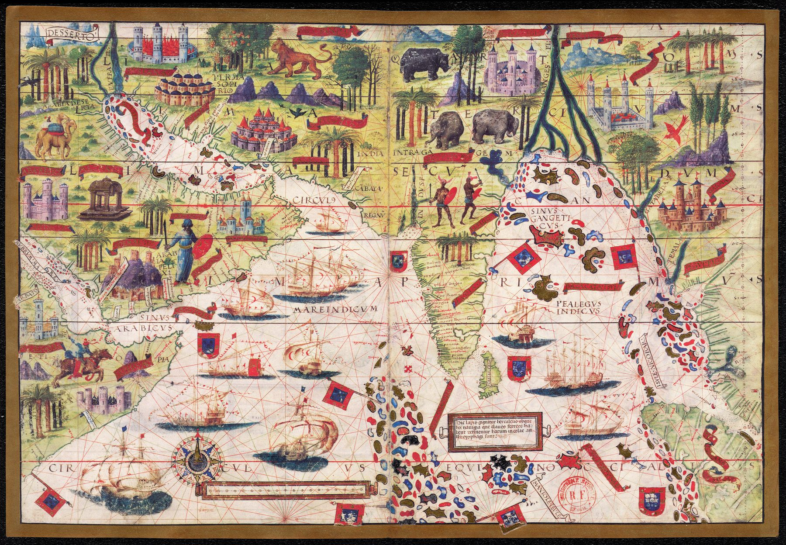

The object
This is folio 3 recto of the Miller Atlas, made for the court of Manuel I of Portugal by the cartographers Lopo Homem, Pedro Reinel and Jorge Reinel, with illumination by António de Holanda. The original atlas is held by the Bibliothèque nationale de France; the image used here derives from a modern facsimile. The distinction matters: the historical object is a 1519 vellum manuscript, not a printed atlas issued by its modern publisher.
A navigated ocean
The sheet runs from the Red Sea and Gulf of Aden across Arabia and the Persian Gulf to India, the Ganges delta and the Nicobar Islands. Rhumb lines, compass geometry and ships place the sea at the centre. This is not India surveyed from inland; it is India approached along routes Portuguese pilots had recently made regular.
Observation and inheritance
The map joins different levels of knowledge without concealing the join. Coastlines and sea passages actually travelled by Portuguese fleets are treated with relative confidence. Elsewhere the cartographers rely on older authorities, reported geography and pictorial convention. Gold, banners, towns and rulers do not merely decorate the geography: they turn knowledge into a statement of royal reach.
The gaze
The European gaze begins here as maritime possession. India is encountered as coast, harbour and destination within an ocean Portugal seeks to command. Yet the sheet also records the limits of that command: empirical navigation at the edges coexists with inherited or imagined knowledge beyond them.